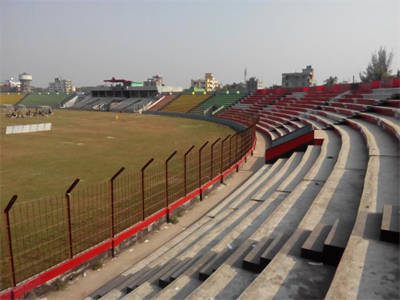

About of Rafiq Uddin Bhuiyan Stadium
Welcome to the magnificent Rafiq Uddin Bhuiyan Stadium, a true sporting haven nestled in the heart of Mymensingh, Bangladesh. With a rich history and immense significance in the local community, this multipurpose stadium has become a symbol of pride and passion for sports enthusiasts.
A Glorious Past etched in Time
Since its inception, Rafiq Uddin Bhuiyan Stadium has witnessed countless iconic sporting moments. From thrilling cricket matches to exhilarating football games, this stadium has been a witness to history.
A Prime Location in Mymensingh
Situated along the vibrant Police Lines Road, this stadium enjoys a central location in the bustling district of Mymensingh. Easily accessible and surrounded by scenic beauty, it offers a memorable experience for both players and spectators alike.
A Multifaceted Hub of Entertainment
Not limited to just cricket and football, this stadium is a hub for cultural programs that bring the community together. From music concerts to traditional festivals, it serves as an exceptional venue for diverse experiences and celebrations.
Design and Architecture
Description of the stadium’s architecture
Located in Mymensingh, Bangladesh, the Rafiq Uddin Bhuiyan Stadium exhibits an impressive architecture designed to provide an exhilarating experience for cricket enthusiasts. Spanning across a vast area, the stadium accommodates a substantial number of spectators, making it an ideal venue for high-profile cricket matches.
Information about the designers or architects
The esteemed architects responsible for bringing this stadium to life are renowned for their expertise in sports facility design. They conceptualized a structure that not only embodies aesthetics but also ensures optimum functionality and comfort for players and spectators alike.
Notable design features
One notable design feature includes the strategically placed seating arrangement that offers unobstructed views of the playing field from any angle. The stadium also incorporates state-of-the-art infrastructure, ensuring smooth operations and facilitating an electrifying atmosphere during matches.
Capacity and Facilities
Rafiq Uddin Bhuiyan Stadium, also known as Mymensingh Zilla Stadium or simply Mymensingh Stadium, is a multipurpose stadium located in Mymensingh, Bangladesh. It is a popular venue for cricket, football, and cultural programs.
Seating Capacity
The stadium has a total seating capacity of 25,000 spectators. This provides ample space for a large crowd to enjoy various sporting and cultural events.